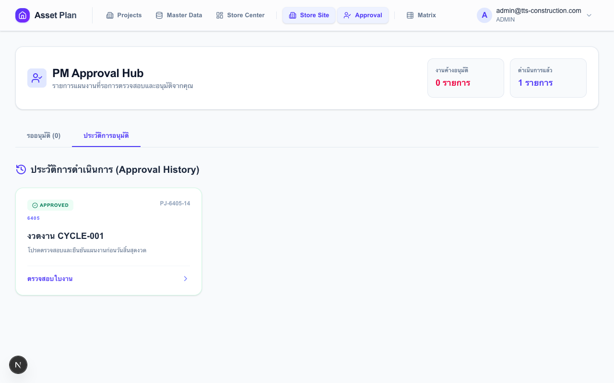

คู่มือผู้จัดการโครงการ (Project Manager)
ตรวจสอบ แก้ไข และตัดสินใจอนุมัติหรือตีกลับแผนความต้องการพัสดุจากหน้างาน
สิทธิ์ที่ใช้
PROJECT_MANAGER
เส้นทาง
เมนู → PM Approval
เริ่มทำงาน
หลังไซต์ Submit แผนแล้ว
1
เปิดหน้า PM Approval — ดูรายการรออนุมัติ
ไปที่เมนู PM Approval — หน้านี้รวมใบงานทุกโครงการที่คุณเป็น PM ไว้ในที่เดียว
| แท็บ | เนื้อหา |
|---|---|
| "รออนุมัติ" | ใบงานที่ไซต์ส่งมาและยังไม่ได้ตัดสินใจ (สถานะ SUBMITTED) |
| "ประวัติการอนุมัติ" | ใบงานที่ดำเนินการแล้ว — ดูได้ แต่แก้ไขไม่ได้ |

แท็บ "ประวัติการอนุมัติ" — ดูย้อนหลังได้ทุกใบงานที่ผ่านการพิจารณาแล้ว:

คลิกที่ใบงานที่ต้องการ → เข้าหน้าตรวจสอบรายละเอียด
2
อ่านแถบสรุปก่อนลงรายละเอียด
ด้านบนของหน้าตรวจสอบแสดงตัวเลขรวมทั้งรอบ — อ่านก่อนเพื่อประเมินภาพรวม:
- ยอดสั่งเพิ่มรวม — รวมทุกครุภัณฑ์ที่ต้องการเพิ่มกว่าที่ไซต์มีอยู่
- ยอดคืนของรวม — รวมทุกครุภัณฑ์ที่ไซต์จะส่งคืนในรอบนี้
💡 ถ้ายอดสั่งเพิ่มสูงผิดปกติ ให้กรอง Mode DEMAND ก่อน เพื่อดูว่ารายการไหนขอมากเกินจริง
3
ใช้ Mode Filter เพื่อตรวจสอบเฉพาะส่วนที่สำคัญ
ตารางแสดงครุภัณฑ์ทุกรายการในใบงาน — Mode Filter ช่วยให้โฟกัสเฉพาะรายการที่ต้องการตรวจจริง แทนที่จะไล่ดูทีละแถว
วิธีใช้: กดปุ่ม Mode ที่แถบเหนือตาราง → ตารางกรองทันที
| Mode | แสดงรายการ | ใช้เมื่อ |
|---|---|---|
| แสดงทั้งหมด | ทุกรายการในใบงาน | ดูภาพรวมตอนเริ่มต้น |
| เฉพาะรายการที่สั่งเพิ่ม | รายการที่ขอเพิ่มเกินสต็อกที่มีอยู่ | ตรวจว่าของที่ขอมีเหตุผลและปริมาณสมเหตุสมผล |
| เฉพาะรายการที่มีการคืน | รายการที่ไซต์จะส่งคืนเพราะมีเกิน | ตรวจยอดคืนก่อนอนุมัติเพื่อความถูกต้อง |
| เฉพาะรายการที่ถูกแก้ไข | รายการที่คุณแก้ตัวเลขแล้วในรอบนี้ | ทบทวนการแก้ไขทั้งหมดก่อนกดอนุมัติ |
📋 Sort ตาราง: คลิก Header คอลัมน์ใดก็ได้เพื่อเรียงลำดับ — ใช้ Sort ตามชื่อรายการเพื่อเปรียบเทียบแต่ละเดือนได้ง่ายขึ้น
4
แก้ไขตัวเลขก่อนอนุมัติ (ถ้าจำเป็น)
PM สามารถปรับตัวเลขในตารางได้โดยตรง ไม่ต้องส่งกลับให้ไซต์แก้ — ทำได้เฉพาะเมื่อ Job เป็น SUBMITTED
- คลิกที่ช่องตัวเลขที่ต้องการแก้ไข → พิมพ์จำนวนใหม่
- กด "บันทึกการแก้ไข" — ระบบบันทึก Log ทุก Cell ที่เปลี่ยน
- ตรวจสอบสิ่งที่แก้ด้วย Mode "เฉพาะรายการที่ถูกแก้ไข"
เมื่อกดอนุมัติ — ตัวเลขที่แก้จะถูกส่งต่อไป Store Center ทันที ตรวจ Mode CHANGED ให้ครบก่อนทุกครั้ง
5
ตัดสินใจ — อนุมัติ หรือ ตีกลับ
| ปุ่ม | สถานะที่เปลี่ยน | ผลที่เกิดขึ้น |
|---|---|---|
| "อนุมัติ" | SUBMITTED → APPROVED | บันทึกการแก้ไขอัตโนมัติ → ส่งข้อมูลให้ Store Center ทันที |
| "ตีกลับ" | SUBMITTED → OPEN | ต้องกรอกเหตุผล → ไซต์แก้ไขและ Submit ใหม่ได้ |


⚠️ ไม่สามารถ Undo การอนุมัติได้ — ถ้าต้องการแก้ไขหลังอนุมัติ ต้องให้ Store Center Unlock ใบงานก่อน แล้วค่อย Resubmit ใหม่